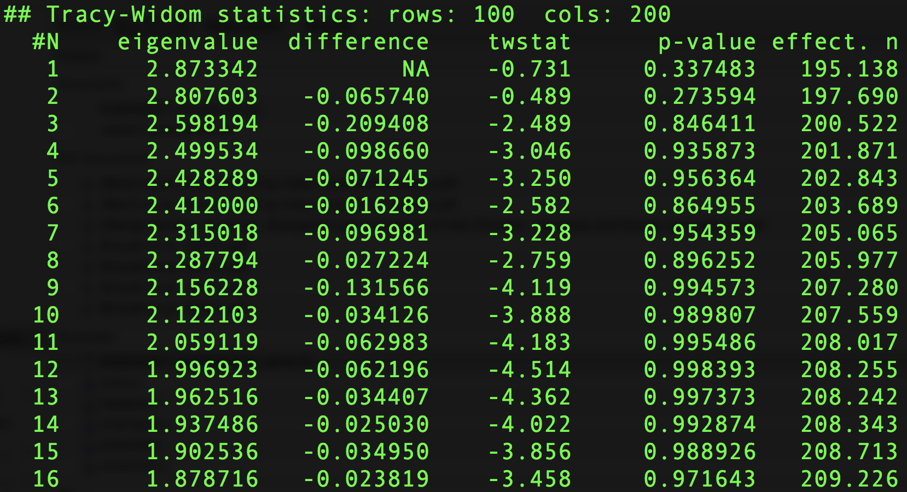
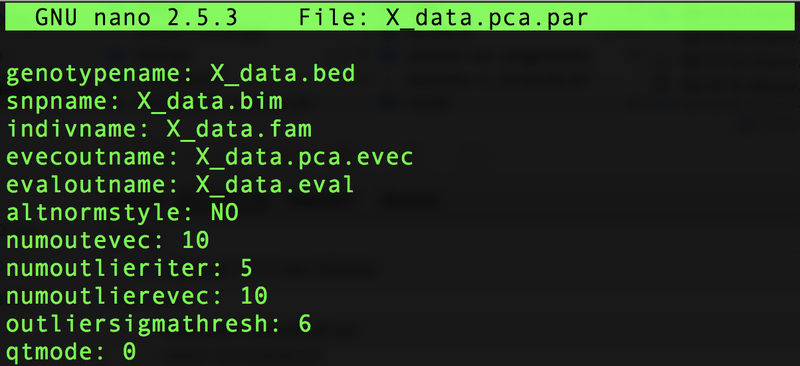
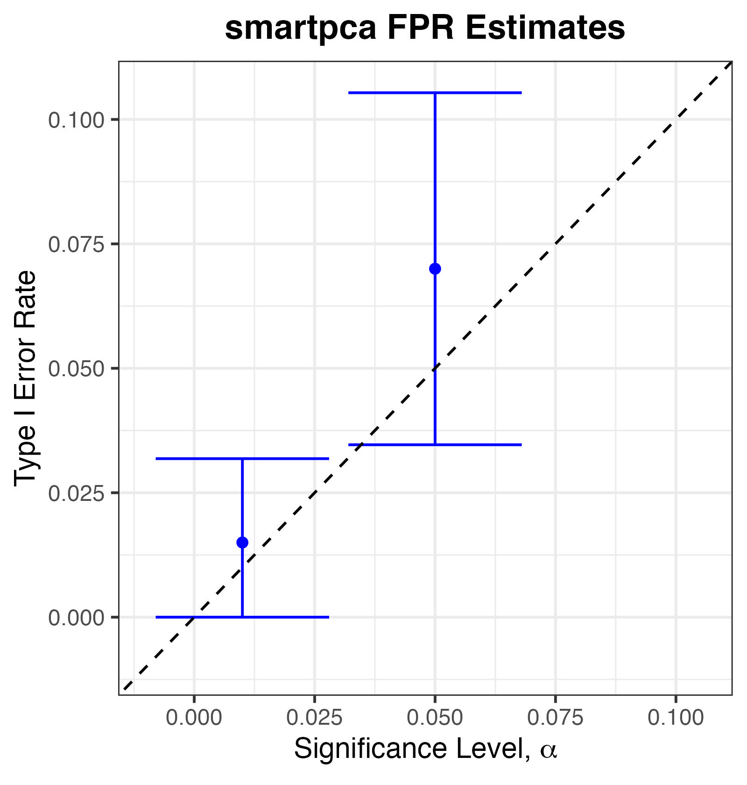
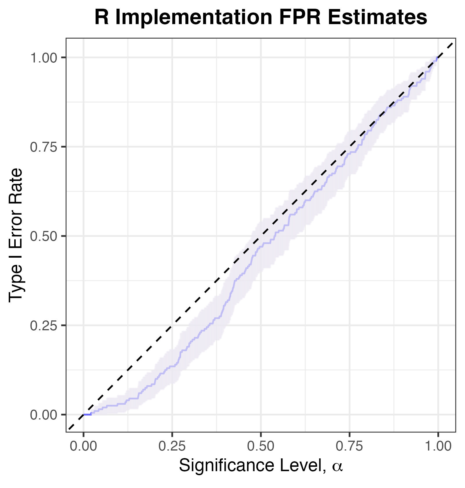
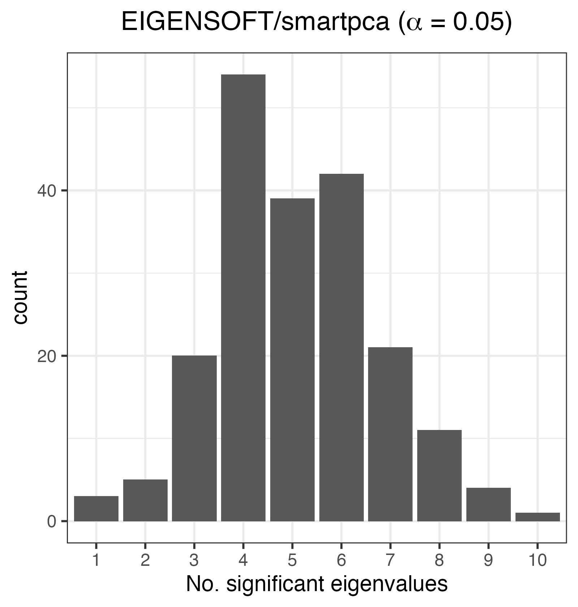
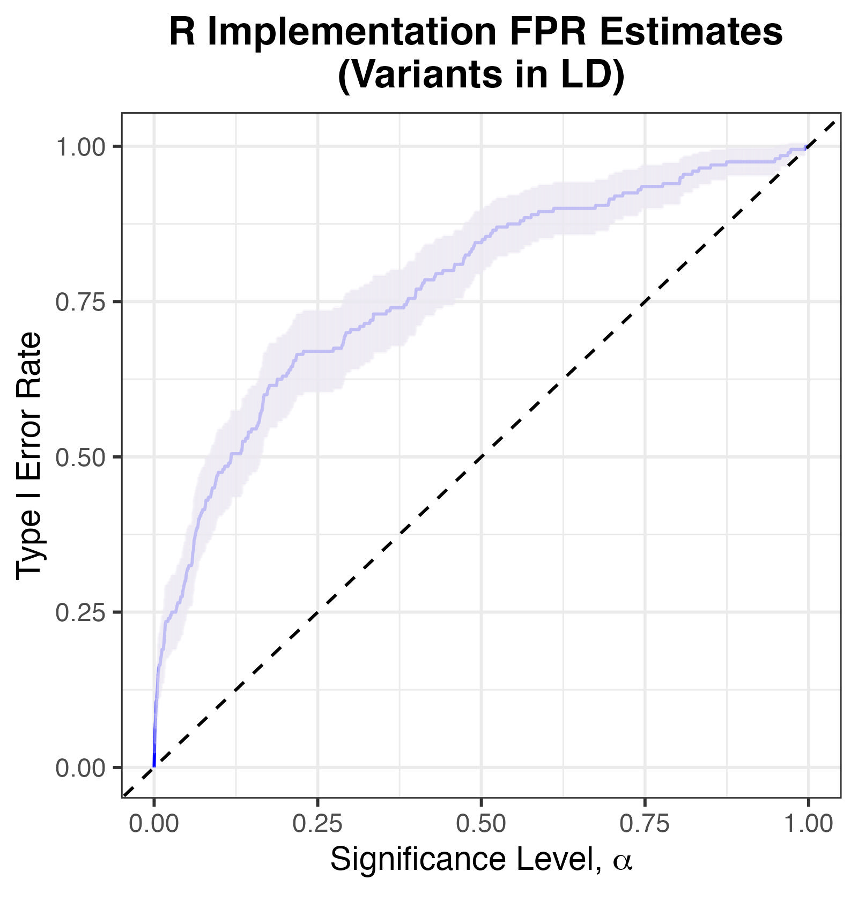
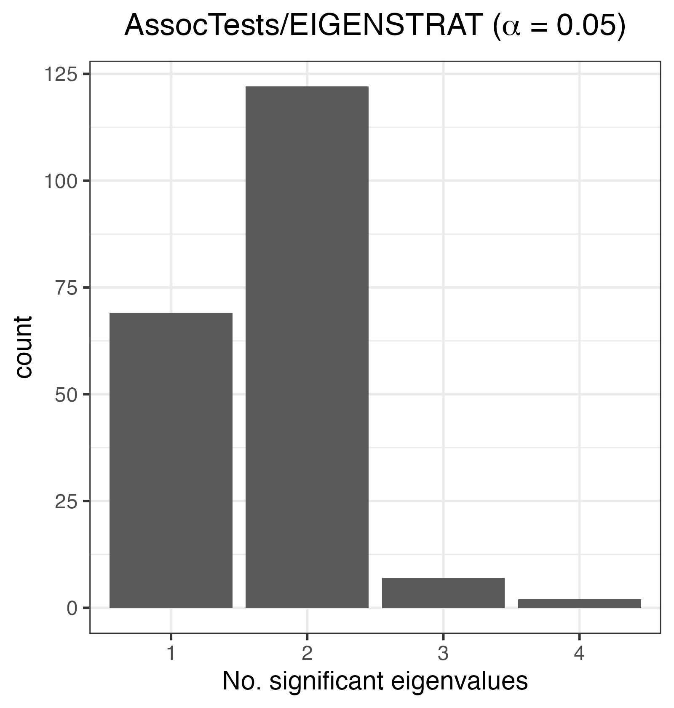
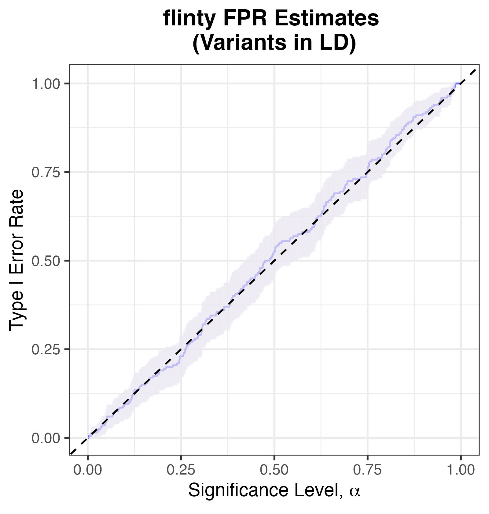

We are grateful to Nick Patterson, a Senior Computational Biologist in the Medical and Population Genetics Program at the Broad Institute of MIT and Harvard, for helpful discussions that spurred the creation of this vignette.
In our paper, we report how our methods can detect whether a set of genomes is exchangeable.
📖 In this vignette, we will
For pedagogical purposes, we code up all methods (except for flinty, of course) from scratch whenever possible. We welcome readers to re-use our code for their own work.
EIGENSOFT (v7.2.1) is a software with multiple functionalities for genetic datasets: testing for stratification on genotype data, performing PCA on genotypes, and detecting causal variants whilst accounting for stratification. The first two functionalities are accomplished by the smartpca “submodule”, whereas the latter is accomplished by another submodule named EIGENSTRAT. This Section focuses on smartpca.
As explained in our paper, an asymptotic result known as the Tracy-Widom theorem motivates a formal test of stratification relying on the largest eigenvalue of the sample covariance matrix. Concretely, suppose that \(\mathbf{X}\in\mathbb{R}^{N\times P}\) consists of \(N\) i.i.d. sub-Gaussian \(P\)-vectors (e.g., each entry being iid \(N(0,1)\) distributed satisfies this). Let \(s_1(\mathbf{X})\) denote the largest singular value of \(\mathbf{X}\); this is equal to the square-root of the largest eigenvalue of \(\mathbf{X}\mathbf{X}^T\). Then, as \(N,P\rightarrow\infty\) with \(P/N \rightarrow \gamma\in(0,\infty)\), Tracy-Widom theory says that \[\begin{equation*}
\frac{s_1^2 - (\sqrt{N-1}+\sqrt{P})^2}{(\sqrt{N-1}+\sqrt{P})\left(\frac{1}{\sqrt{N-1}}+\frac{1}{\sqrt{P}}\right)^{1/3}} \overset{d}{\longrightarrow} F_1(s),
\end{equation*}\]
where \(F_1\) is the Tracy-Widom distribution with ensemble index \(1\) (TW\({}_1\)), i.e., \[\begin{equation*}
F_1(x) = \exp\left(-\int_x^\infty [u(s)+(s-x)u^2(s)]ds\right)\hspace{1cm} \text{for }x \in \mathbb{R},
\end{equation*}\] with \(u(s)\) defined as the solution to the nonlinear ordinary differential equation \(u''=2u^3 + su\) with asymptotic condition \(u(s)\sim \frac{1}{2\sqrt{\pi} s^{1/4}}\exp(-\frac{2}{3}s^{3/2})\) as \(s\rightarrow\infty\). (The ODE is called the Painlevé II equation and its solution the Hastings-Mcleod solution.)
Just like how the famous Central Limit Theorem allows us to construct confidence intervals and perform \(z\)- or \(t\)-tests on sample means that converge to the Gaussian under some null model, so does Tracy-Widom theory allow us to perform asymptotic tests on a multivariate sample, whose largest singular value converges to the TW\({}_1\) under some null model. (Recall that the \(z\)- and \(t\)-tests are asymptotic two-sample tests of difference in sample means, contingent on the Central Limit Theorem working on the means even if the samples themselves are not normally distributed.)
What is the null model here? In population genetics, a panmictic population produces exchangeable individual genomes. In the presence of population structure, however, stratification of the sampled genomes occurs. Thus, in applying the TW test, we hope to detect stratification or exchangeability in a sample of genomes.
In a population-genetic setting, the rows of \(\mathbf{X}\) are polarised genotypes or haplotypes, i.e., each row lies in either \(\{0,1,2\}^P\) or \(\{0,1\}^P\). In Patterson et al. (2006), the authors propose the following test, in the absence of marker-marker linkages (i.e., LD).
Perform Hardy-Weinberg normalisation.
Let \(C(i,j)\) be the number of variant alleles for marker \(j\), individual \(i\). Define the mean allelic dosage at marker \(j\) by \(\mu(j) = \frac{\sum_{i=1}^N x_{ij}}{N}\), and define the estimate of the underlying allele frequency by \(p(j) = \mu(j)/2\) if the data are of genotypes and \(p(j)=\mu(j)\) if the data are of haplotypes. Compute the Hardy-Weinberg normalised version of \(\mathbf{X}\), \(\mathbf{M}=(m_{ij})\), where
\[\begin{equation*} m_{ij}=\frac{x_{ij} - \mu(j)}{\sqrt{p(j)(1-p(j))}}. \end{equation*}\]
Compute the sample covariance matrix, \(\mathbf{C} = \mathbf{M}\mathbf{M}^T\). This matrix has dimension \(N\times N\).
Order the eigenvalues of \(\mathbf{C}\) so that \(\lambda_1>\lambda_2>\ldots>\lambda_{N-1}>0\). (Due to normalisation in Step 1, the last eigenvalue is zero. Hint: what is \(\mathbf{M}^T\mathbf{1}\)?)
Compute the effective number of markers.
Instead of analysing the largest singular value of \(\mathbf{X}\), analyse the largest eigenvalue of \(\mathbf{C}\). This is because the TW\({}_1\) approximation really applies to the square of the largest singular value, which is just the largest eigenvalue (i.e., \(s_1^2=\lambda_1\)). Because \(\mathbf{C}\) has an approximate Wishart distribution, one estimates the degrees of freedom parameter of the Wishart, \(P'\), rather than using the putative number of features, \(P\):
\[\begin{equation*} P' = \frac{(N+1)\left(\sum_{i}\lambda_i\right)^2}{\left((N-1)\sum_{i}\lambda_i^2\right) - \left(\sum_{i}\lambda_i\right)^2}. \end{equation*}\]
Compute the normalised largest eigenvalue.
The normalised largest eigenvalue is defined by \[\begin{equation*} \ell = \frac{(N-1) \lambda_1}{\sum_{i=1}^{N-1}\lambda_i}. \end{equation*}\]
Scale and centre \(\ell\).
Define the quantities \[\begin{eqnarray*} a & = & \frac{(\sqrt{P'-1} + \sqrt{N})^2}{P'}, \\ b & = & \frac{(\sqrt{P'-1} + \sqrt{N})}{P'}\left(\frac{1}{\sqrt{P'-1}} + \frac{1}{\sqrt{N}}\right)^{1/3}, \end{eqnarray*}\] where \(P'\) is defined in Step 4. Compute \[\begin{equation*} t = \frac{\ell - a}{b}, \end{equation*}\] where \(\ell\) is defined in Step 5.
Compute the tail probability of \(t\) against the TW\({}_1\) distribution.
In other words, \(t\) is approximately TW\({}_1\)-distributed under an exchangeable, or “no stratification”, null model.
In smartpca, the \(p\)-values reported in the output file are precisely the tail probabilities computed in Step 7.
Here is part of an example output file of smartpca that has to do with the test just described.

Example output file reporting significant eigenvalues of the sample covariance matrix, where p-values are computed as described above.
The reason there are multiple \(p\)-values is that the software repeats the procedure above for all subsequent eigenvalues: if the top \(k\) eigenvalues are declared significant, then the remaining eigenvalues \(\lambda_{k+1},\ldots,\lambda_{N}\) can be tested for significance as though the normalised sample covariance matrix \(\mathbf{C}\) (defined in Step 2) was a \((N-1 -k)\times (N-1-k)\) Wishart matrix. (See “Detecting Additional Structure” on p. 2078 of Patterson et al., 2006).
In our paper we demonstrated that our method controls Type I Error. Can the same be said of the population-genetic EIGENSOFT? Since we believe that details matter to understanding at the operational level, we take care to elaborate on our simulation setup and the nuts and bolts of running the smartpca submodule. Subsequent sections will be presented with brevity.
We first consider how good EIGENSOFT/smartpca is at detecting exchangeability in the case of independent markers. We plan to examine performance on stratification in future work.
To simulate genomic data under an exchangeable null, we generate \(N=100\) synthetic individual haplotypes, where each haplotype is comprised of \(P=200\) independent markers, each realised by Bernoulli distributions with heads probability determined by a fixed population allele frequency ranging between \(0.2\) and \(0.8\). This is shown in code below.
## Helper function to draw samples
## Function to generate N individual haplotypes
## using simple coin flips, with heads probability
## determined by the allele frequency. Allele frequencies
## are arbitrarily drawn from a uniform distribution and fixed
## beforehand. The second argument, num_ind_markers, decides
## the number of independent alleles.
getExHaplotypes <- function(N, num_ind_markers) {
# Create population allele frequencies
allele_freqs <- runif(n = num_ind_markers, min = 0.2, max = 0.8)
# Generate array
out_array <- do.call("cbind",
lapply(allele_freqs, function(x) {rbinom(N,1,x)}))
colnames(out_array) <- paste0("rs", 1:num_ind_markers)
# Return
to_return <- list(data = out_array,
bounds = 1:num_ind_markers)
return(to_return)
}
## Generate array
set.seed(2021)
ex_array <- getExHaplotypes(N=100, num_ind_markers=200)
## Print
print(ex_array$data[1:10,1:10])
#> rs1 rs2 rs3 rs4 rs5 rs6 rs7 rs8 rs9 rs10
#> [1,] 0 1 1 1 0 0 1 1 1 1
#> [2,] 0 1 0 0 0 0 1 0 1 1
#> [3,] 1 1 1 0 0 1 0 0 1 0
#> [4,] 1 1 1 1 1 0 1 1 0 1
#> [5,] 0 1 1 0 0 0 0 0 1 1
#> [6,] 0 1 1 0 1 0 0 0 1 1
#> [7,] 0 0 1 0 0 1 1 0 1 0
#> [8,] 0 1 1 0 0 1 1 0 0 1
#> [9,] 0 1 1 1 0 1 0 0 1 1
#> [10,] 0 1 1 0 1 1 1 0 0 0To run smartpca on a simulated haplotype matrix, say X_data, we enter the following line in the directory containing the simulated matrix and the EIGENSOFT package. (We assume the user has these two files under the same directory.)
./EIG-7.2.1/bin/smartpca -p X_data.pca.par > EIGENSOFT_outHere X_data.pca.par is a colon-separated file providing information for smartpca to perform its computations:

Example pca.par file to be read by EIGENSOFT/smartpca.
Additionally, with help from the RMTstat package (Johnstone et al., 2014), we implement from scratch the algorithm described in the beginning, just to see how well its performance agrees with the smartpca software. We use a two-tailed test for conservativeness.
## Function to compute significance of largest eigenvalue
## in the correlation matrix. We closely follow p. 2078 of
## PPR2006.
require(RMTstat)
getTWPValue <- function(M) {
# 1. Assume M is computed as in Equations 1, 2, and 3.
# Use regressMatrix function to remove LD if necessary
m <- nrow(M)
# 2. Compute X = MM'. X is m x m
X <- M %*% t(M)
# 3. Order the eigenvalues of X so that ...
eigen_X <- eigen(X, symmetric = TRUE, only.values = TRUE)$values
eigen_X <- eigen_X[1:(m-1)]
# 4. Estimate n' from Equation 10
n_prime <- (m + 1) * sum(eigen_X)^2 / (((m-1) * sum(eigen_X^2)) - sum(eigen_X)^2)
# 5. The largest eigenvalue of M is lambda_1. Set l
lambda_1 <- max(eigen_X)
l <- (m-1) * lambda_1 / sum(eigen_X)
# 6. Normalize l with Equations 5-7, where the effective number of markers n' replaces n
mu_mn <- (sqrt(n_prime - 1) + sqrt(m))^2 / n_prime
sigma_mn <- (sqrt(n_prime - 1) + sqrt(m))/n_prime * (1/sqrt(n_prime - 1) + 1/sqrt(m))^(1/3)
tw_stat <- (l - mu_mn) / sigma_mn
# Compute and return p-value
# Using two-tailed test for conservativeness
p_val <- 2 * min(ptw(tw_stat, beta = 1, lower.tail = T), ptw(tw_stat, beta = 1, lower.tail = F))
return(p_val)
}A functional script that performs the tasks above, and generates the results about to be reported, can be downloaded from Github. (You will need EIGENSOFT installed.)
We simulate \(200\) exchangeable haplotypes matrices, with each matrix generated by getExHaplotypes. We estimate Type I Error rates by counting the fraction of false rejections of the null hypothesis at a specified significance threshold, \(\alpha\).
We find that smartpca controls Type I Error at commonly chosen significance thresholds (\(\alpha\in\{0.01,0.05\}\)): even though the point estimates of Type I Error rate appear slightly above the nominal \(\alpha\), the \(95\%\) confidence intervals well contain \(\alpha\).

Type I Error Rates for smartpca.
We also find that our own implementation of the algorithm, which we refer to as R Implementation, is slightly conservative, albeit still controlling Type I Error (uniformly in \(\alpha\)).

Type I Error Rates for R Implementation. Note that an exact test should have its empirical Type I error rate lying on or below the y=x line.
These results provide independent verification of the claim in Patterson et al. (2006) that their method is efficacious for independent markers.
As we report briefly in our paper, we explored the performance of smartpca and flinty on simulated genomes with linked markers. To simulate such data, we rely on msprime to generate \(N=100\) individual haplotypes across \(B=10\) chromosomes, with each chromosome simulated independently of all other chromosomes. Per chromosome, haplotypes are generated from the coalescent with mutation rate and recombination rate set at \(2\times 10^{-8}\) and effective population size \(10^4\). We further set the physical length of each chromosome to \(10^5\), so that each chromosome contains order \(10^2\) single nucleotide polymorphisms. The code to generate SNPs within a single chromosome can be found here. Code to generate the \(10\) chromosomes independently can be found in lines 78-106 of this script.
Note that this generative model results in linked markers because the small recombination rates are insufficient to remove linkage.
On top of running smartpca, we perform LD pruning and marker regression, two strategies suggested by Patterson et al. (2006) to remove linkage. We rely on the AssocTests software, recently developed by Wang et al. (2020) to run the smartpca algorithm within R, after performing LD pruning with PLINK, to facilitate smoother analysis. For marker regression, we code from scratch the method described on p. 2086 of Patterson et al. (2006); see lines 5-33 in this script. Consistent with the recommendations in the paper, we use \(k=5\) markers in the regression, and pipe the regressed output into our previously coded up eigenvalue significance test, getTWPValue.
What do we find? Let us list the results by method. We begin by loading the results obtained from running our script.
## Load results
# Load libraries
library(dplyr)
library(ggplot2)
# Load result file
EIGENSOFT_dep_df <-read.csv("EIGENSOFT_results_dep_df.csv")The histogram below shows that at \(\alpha=0.05\), the number of significant eigenvalues is overestimated.

Histogram of the number of significant eigenvalues, K. For an exchangeable sequence, K should be 0.
Because \(K=0\) is the typical decision rule for whether a sample is unstratified (i.e., exchangeable), we can compute the FPR at \(\alpha=0.05\):
## Compute EIGENSOFT FPR
print(paste0("The FPR estimate is ", mean(EIGENSOFT_dep_df$EIGENSOFT_a5 > 0), "."))
#> [1] "The FPR estimate is 1."getTWPValue), with marker regression to correct for LDThe plot of Type I Error against significance threshold \(\alpha\) shows that the conservative test of non-exchangeability also has inflated Type I error.

Type I Error Rates for R Implementation, with simulated markers in LD.
This demonstrates that marker regression alone can be inadequate at accounting for LD whilst deciding whether a sample of genomes is exchangeable.
LD pruning was performed using PLINK, such that whenever a pair of variants with LD at least \(0.1\) within a window of \(50\) SNPs is observed, the variant with lower MAF is removed. (You can see line 165 of our script and the PLINK2 users forum for details.)
The plot below shows that at \(\alpha=0.05\), the number of significant eigenvalues is overestimated.

Histogram of the number of significant eigenvalues, K. For an exchangeable sequence, K should be 0.
This demonstrates that LD pruning alone is also inadequate at accounting for LD whilst deciding whether a sample of genomes is exchangeable.
We assume the variants are partitionable, and moreover assume that variants lying in different chromosomes are independent of one another. (This assumption, if true, enables us to build chromosome-specific evolutionary models with the individual haplotypes as data.)
The plot of Type I Error against significance threshold \(\alpha\) shows that flinty reasonably controls the Type I error. Even though the point estimates sometimes lie above the \(y=x\) line, the \(95\%\) confidence intervals well contain the \(y=x\) curve.

Type I Error Rates for flinty, with simulated markers in LD.
This section will explore different approaches used to estimate the “effective number of markers” parameter of the observed Wishart matrix computed from the scaled genotype matrix. To be continued.